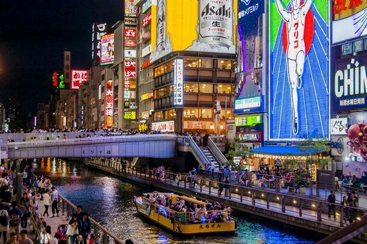
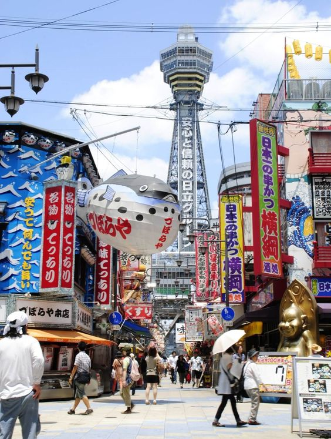
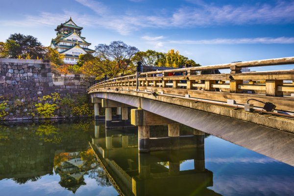

Osaka é uma grande cidade portuária e um centro comercial na ilha japonesa de Honshu. Ela é conhecida pela arquitetura moderna, pela vida noturna e pela comida de rua. O castelo Osaka do xogunato do século 16, que passou por várias restaurações, é o ponto turístico histórico principal. Ele está cercado por um fosso e um parque com ameixeiras, pessegueiras e cerejeiras. Sumiyoshi-taisha está entre os santuários Shinto mais antigos do Japão.
   Link para comprar passagens aéreas para ir para Osaka
Link para comprar passagens aéreas para ir para Osaka